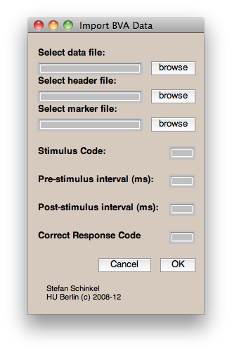

BVALOADER - load and epoch Brain Vision data - without EEGlab
About:
I work a lot with EEG data and do almost everything in Matlab - but I don't use EEGlab. In order to still have a rather convenient access to BrainVision data I wrote some functions to import such data. Note: If you intend to use EEGlab for your analysis anyways, you will be better of using the bva-io plugin by Andreas Widmann.
Contents:
- bva_readheader.m
- - read BrainVision Header (.vhdr) files
- bva_readmarker.m
- - read BrainVision Marker (.vmrk) files
- bva_loadeeg.m
- - read BrainVision Data (.eeg) files
- bva_rt.m
- - extract reaction times from Marker (.vmrk) files
- bva_epoch.m
- - epochise continous EEG data (stimulus-locked)
- bva_epoch2.m
- - epochise continous EEG data (response-locked)
- bva_loadsubject.m
- - wrapper function
Requirements:
- MATLAB (I use 2007, 2010a and 2010b so those should work, as well as any recent version)
Example:
Here is a short example how to use the functions. Imagine we have an EEG
recording featuring 2 distinct conditions (stimuli classes),
for simplicity 1 and 2. Also subjects had to give a response after the stimulus.
The correct response is encoded with 100.
Here's how to load such kind of data:
% setup filenames, produced by BrainVision Recorder, if
% those are not given, the function will ask for them
headerFile = 'experiment.vhdr';
markerFile = 'experiment.vmrk';
% first get the continuous data as a matlab array
eeg = bva_loadeeg(headerFile);
% meta information such as samplingRate (fs), labels, etc
[fs label meta] = bva_readheader(headerFile);
% read the marker (.vrmk) and store codes
triggers = bva_readmarker('markerFile');
%setup stimlus and response codes
stimCode1 = 1;
stimCode2 = 2;
respCode = 100;
% and the interval of the segments (trials)
pre = 300; % 300ms pre-stimulus interval
post = 1000 % 1000ms post-stimulus interval
% epoch continuous data for both stimulus codes,
% and also get the reaction times
[condition1 rt1] = bva_epoch(eeg,trigger,stimCode1,pre,post,fs,respCode);
[condition2 rt2] = bva_epoch(eeg,trigger,stimCode2,pre,post,fs,respCode);
% epoch continuous data for both stimulus codes and get reaction times
% but this time locked to the response, not the stimulus
[condition1respLocked rt1] = bva_epoch2(eeg,trigger,stimCode1,pre,post,fs,respCode);
[condition2respLocked rt2] = bva_epoch2(eeg,trigger,stimCode2,pre,post,fs,respCode);
% or use the GUI

Note: When using this GUI you need to save the continuous EEG data as a Matlab (.mat) file. If you find that too annoying, drop me a line and I can fix that.
eeg = bva_loadeeg(headerFile); save eeg.mat eeg;
Alternatively, the BrainVision Analyzer can do that for you.

{kind=link}